Adam Samuelson's Portfolio
Introduction
Hello, my name is Adam Samuelson! I'm a computer science student at the University of Texas at Austin and I'm a STEP intern with G o o g l e for the summer of 2020!
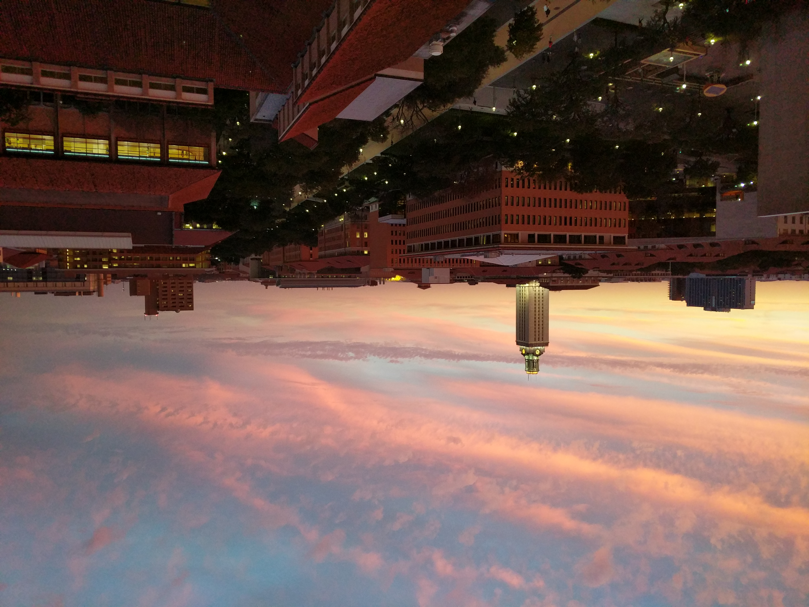
My Ambitions
From a young age, I knew that I wanted to write code that helps people. While taking a class called "Youth and Technology" my fist semester of college, I wrote a research paper called "Youth and Technology Addiction". This research paper showed me how problematic smartphone usage (especially among youth) can cause things such as depression and anxiety. This led me to deicde I want my focus in computer science to be on reducing the negative effects technology can have on our wellbeing. Technology should propel us forward, not hold us back.
Photography Gallery
Somehow I kind of ended up getting into photography (or maybe I just like taking pictures of campus). All of these pictures I took on a Google Pixel XL except for 2 that were taken on a Google Pixel 4 XL 📸 Can you tell which ones? 🧐
 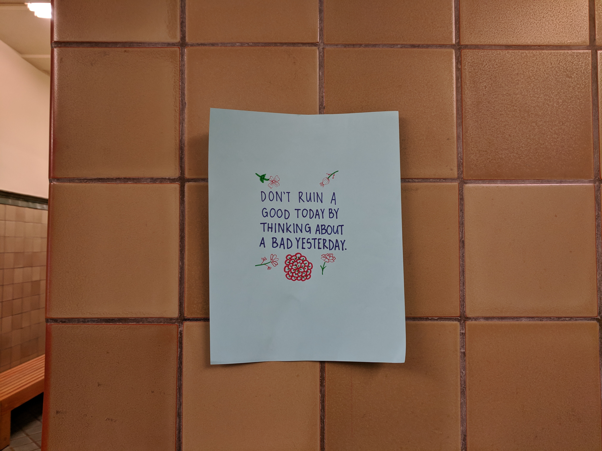
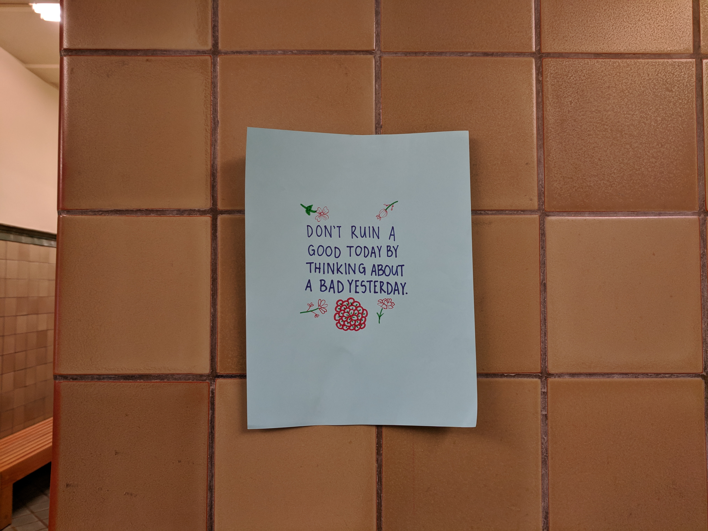
 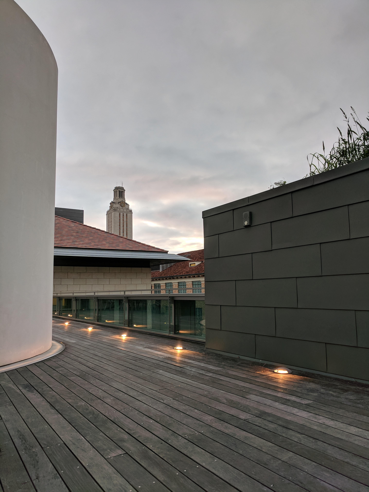
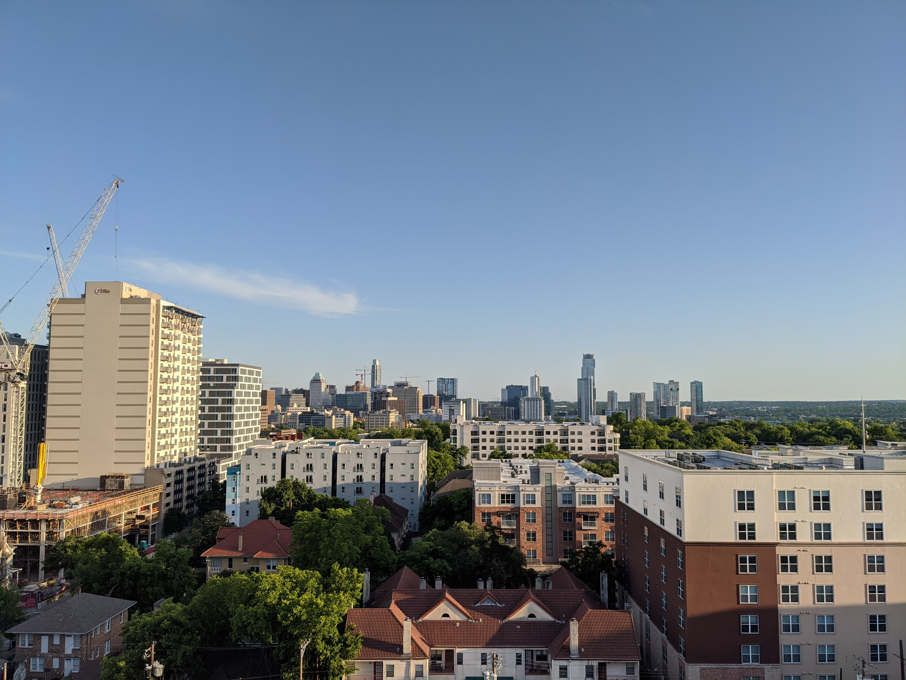
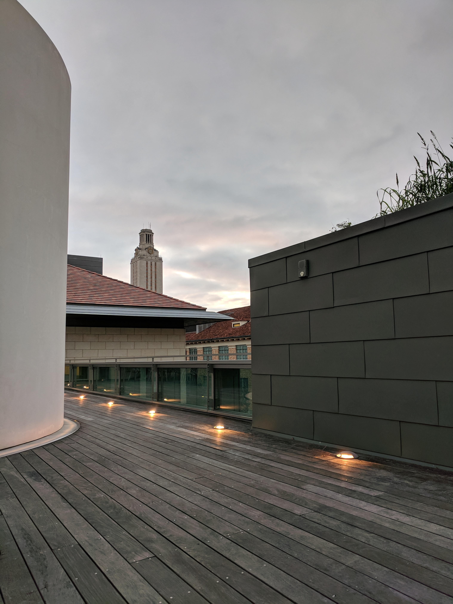
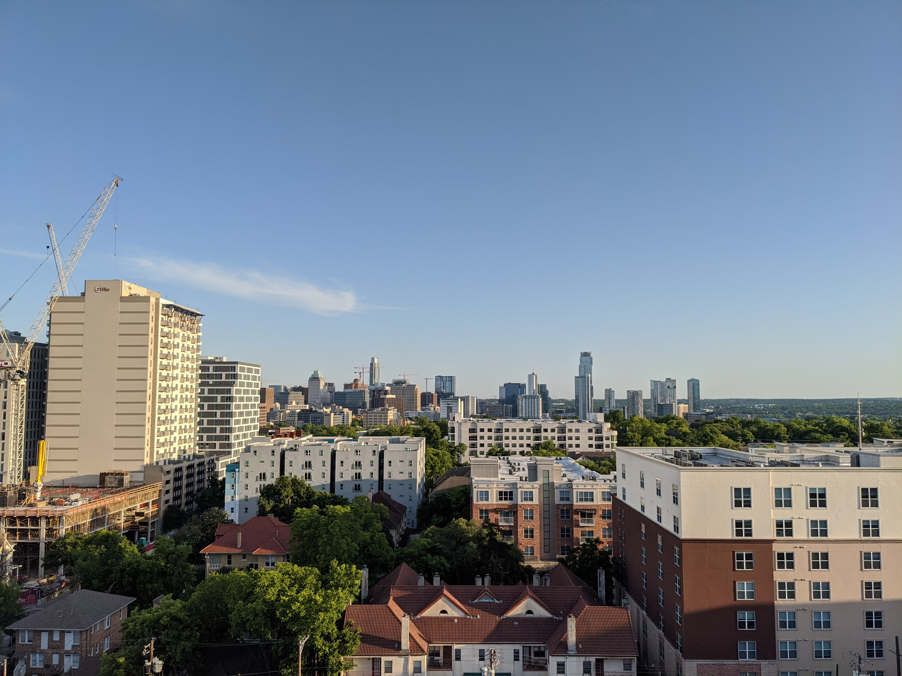
 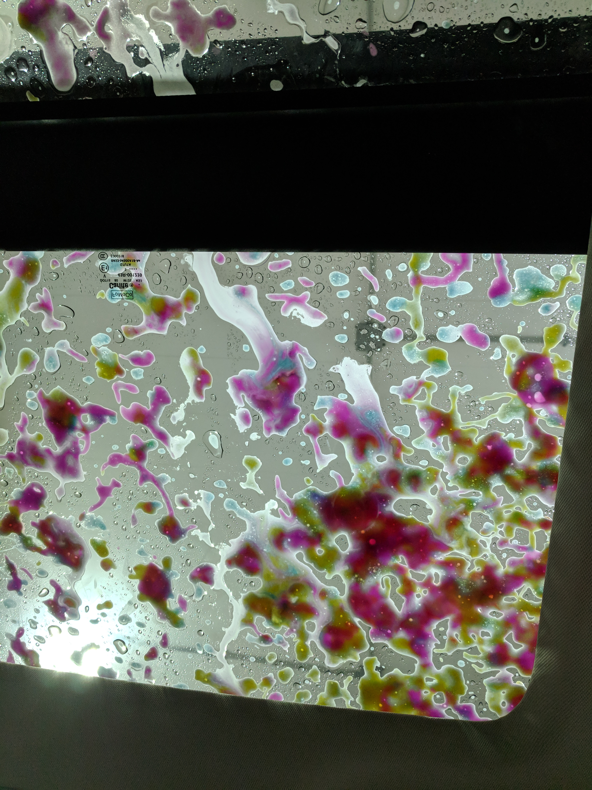
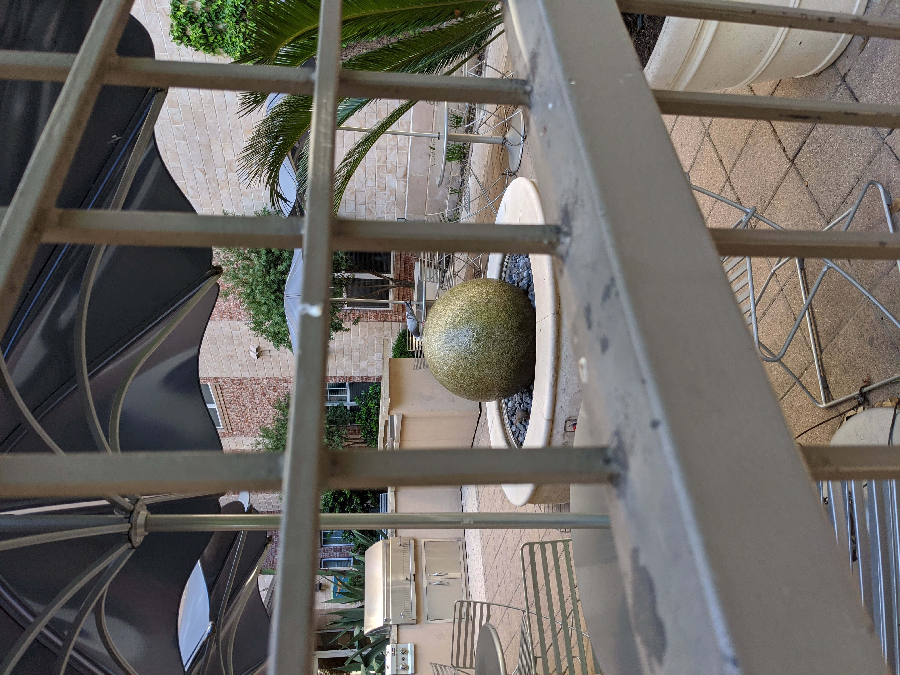
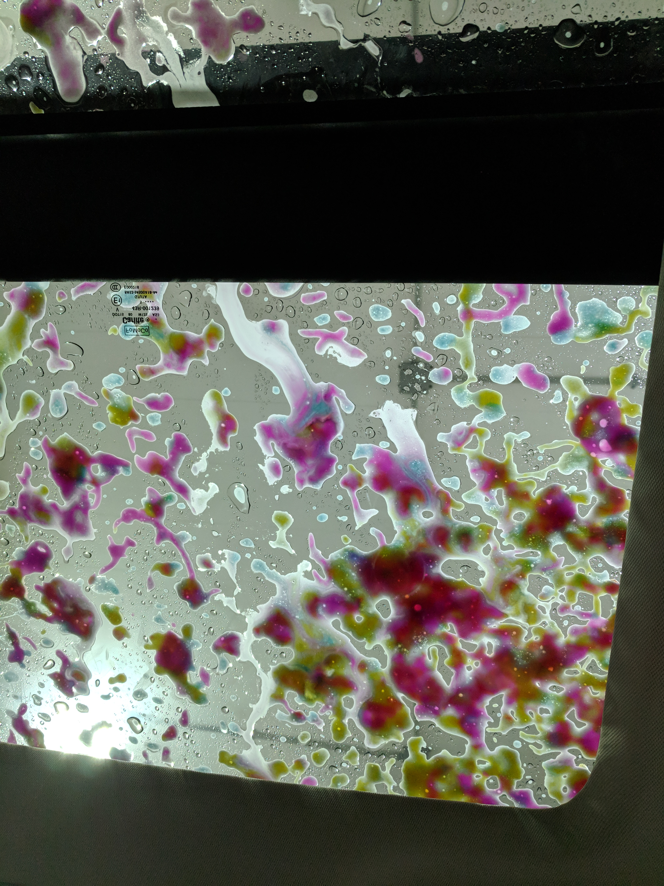
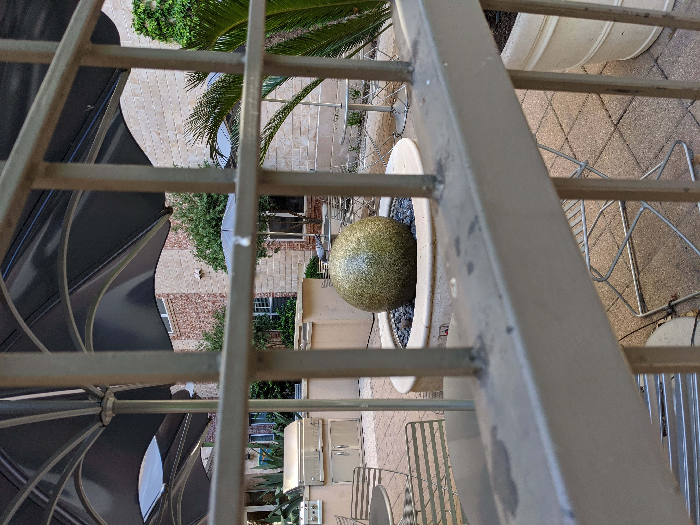
The Office
Click here to see one of my favorite quotes from my favorite show, The Office!
Favorite character scoreboard: